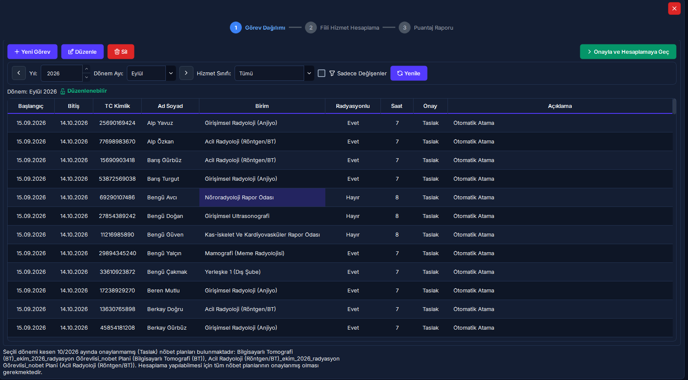
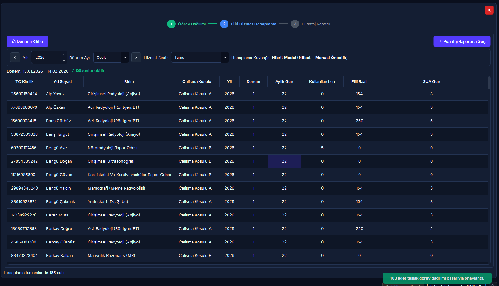
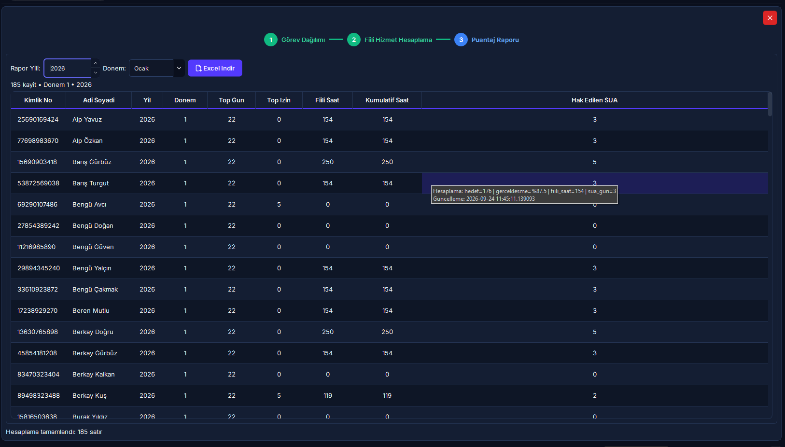
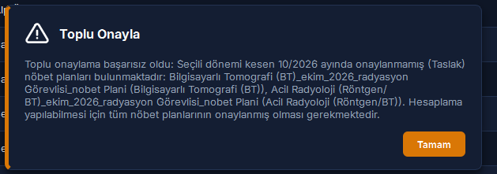

Fiili Hizmet ve Şua Hesaplama (FHZ)
5510 sayılı Sosyal Sigortalar ve Genel Sağlık Sigortası Kanunu m. 40 kapsamındaki Fiili Hizmet Süresi Zammı (FHZ) puantajlarını ve 3153 sayılı Kanun Ek Madde 1 ile 13.04.2023 / 32162 sayılı Yönetmelik EK-2 Sağlık İzni Tablosu uyarınca Şua İzni hakedişlerini 3 sekmeli entegre sihirbaz üzerinden hesaplar, onaysız izin bariyeri ve sıralı dönem/yıl kilitleriyle korur.
Kısa Reçete: 3 Sekmeli FHZ ve Şua Puantaj Sihirbazı
15–14 SGK bordro dönemine ait görev yerlerinin onaylanması, net fiili çalışma saatlerinin ve EK-2 Şua hak edişlerinin hesaplanıp kilitlenerek SGK puantaj cetvelinin alınması.
1. sekmede varsayılan ve rotasyonlu görev yerlerini kontrol edip [1. Görev Yerlerini Onayla ve Hesaplamaya Geç]'e basın; 2. sekmede hesaplamayı doğrulayıp [2. Hesaplamayı Kaydet, Kilitle ve Rapor Çıktısına Geç] butonunu kullanın; 3. sekmede [3. Rapor Çıktısı Al (Excel / PDF)] ile çıktıyı alıp [4. İşlemi Bitir ve Kapat]'a tıklayın.
Onaysız izin varsa güvenlik bariyeri hesaplamayı durdurur; Koşul A (7s) ve Koşul B (8s) ayrıştırılır; yıl içi kümülatif toplamda 32162 Yönetmelik EK-2 basamakları (azami 30 gün) uygulanır ve dönem mühürlenir.
5N1K Kural ve Arayüz Çözümleme Tablosu
15–14 SGK döngüsü, Koşul A/B ayrımı, onaysız izin engeli, EK-2 Şua hesabı, nöbet revizyon uyarısı ve sıralı kilit kuralları.
Kritik Sahada Yanlış Bilinen Kurallar (Mit Avcısı)
Süreç Akış Şeması
İzin Var mı?"} -->|Evet| E["ENGEL: İzin Listesine Git ve Onayla"] D -->|Hayır| F["Koşul A 7s / Koşul B 8s & EK-2 Şua"] F --> G["2. Hesaplamayı Kaydet, Kilitle ve Rapor Çıktısına Geç"] G -.->|Sonradan Nöbet Revizyonu| H["Revize Personelleri Hesapla & Yeniden Kilitle"] end subgraph S3 ["3. SEKME: RAPOR ÇIKTISI VE YIL KİLİDİ"] direction LR I["3. Rapor Çıktısı Al (Excel / PDF)"] --> J["4. İşlemi Bitir ve Kapat"] K["12 Dönem Sonunda Yılı Kilitle"] --> L(["Web Şua Karnesi Kesinleşir"]) end C ==> D G ==> I
- Görev Yerlerini Onaylama: 15–14 bordro dönemindeki varsayılan birimler ve varsa geçici rotasyon görevleri onaylanarak hesaplama adımına geçilir.
- Hesaplama ve Kilitleme: Onaysız izin bariyeri geçildikten sonra Koşul A/B ayrımı, izin düşümü ve EK-2 Şua hesabı yapılır; kayıtla dönem kilitlenir ve sonradan nöbet değişikliği olursa yalnızca revize satırlar tekrar mühürlenir.
- Raporlama ve Yıl Kapatma: Resmi SGK puantaj cetveli dışa aktarılıp sihirbaz kapatılır; yılın 12 ayı tamamlandığında yetkili yönetici yılı kilitleyerek Şua karnesini kesinleştirir.
Arayüz Ekran Görünümleri




Adım Adım İşlem Rehberi
1. Görev Yerlerini Kontrol Etme ve Onaylama (1. Sekme)
- Sol menüden [Fiili Hizmet ve Şua] ekranını açın ve Görev Yerlerini Onayla sekmesinde Yıl ile Dönemi (ayın 15'i – sonraki ayın 14'ü) doğrulayın.
- Kadro birimi dışında görevlendirilenleri görmek için [Sadece Değişenler] kutusunu kullanın; rotasyon veya geçici görev eklemek için [Rotasyon / Ek Görev Ekle] ya da satır seçerek [Görev Yerini Değiştir] butonundan saat ve birim bilgilerini kaydedin.
- Sağ üstteki [1. Görev Yerlerini Onayla ve Hesaplamaya Geç] butonuna tıklayarak 2. sekmeye geçin.
2. Fiili Hizmet ve Şua Hesaplama, Kilitleme ve Revizyon Güncelleme (2. Sekme)
- Fiili Hizmeti Hesapla sekmesinde dönem içinde resmi onayı tamamlanmamış izin varsa sistem uyarı penceresi açar; [İzin Listesine Git / Resmi Onay Ver] butonuyla onayları tamamlayıp dönün.
- Tabloda Koşul A (7.0s) / Koşul B (8.0s) ayrımını, net fiili çalışma saatini ve kümülatif EK-2 Şua günlerini doğrulayıp [2. Hesaplamayı Kaydet, Kilitle ve Rapor Çıktısına Geç] butonuna basın.
- Kilitlenmiş bir dönemde nöbet revizyonu nedeniyle üstte uyarı şeridi belirdiğinde [Revize Personelleri Hesapla] butonuna basıp tutarları yenileyin ve [Değişiklikleri Onayla ve Yeniden Kilitle] ile dönemi tekrar mühürleyin (Admin veya Süpervizör gerekirse [Dönem Kilidini Aç] veya yıl sonunda [Yılı Kilitle] butonunu kullanabilir).
3. Rapor Çıktısı Alma, İşlemi Bitirme ve Web Portalı Şua Karnesi
- Rapor Çıktısı Al sekmesinde resmi puantaj cetvelini inceleyip [3. Rapor Çıktısı Al (Excel / PDF)] menüsünden Excel, PDF veya Word çıktısını indirin ve [4. İşlemi Bitir ve Kapat] butonuyla sihirbazı tamamlayın.
- Web Portalı Şua Karnesi: Yöneticiler ve çalışanlar tarayıcıdan kazanılan, kullanılan ve yıl sonunda yanma riski taşıyan kalan Şua günlerini takip eder; 20 gün ve üzeri kalanlar Kritik Risk, 1–19 gün kalanlar Planlama Bekliyor, 0 gün kalanlar Eksiksiz Kullandırıldı durumuyla izlenir.
Sıkça Sorulan Sorular (SSS)
Bir dönemi kilitlemek istediğimde neden "önceki dönem kilitlenmeden kilitlenemez" uyarısı alıyorum?
SGK denetim bütünlüğü gereğince aylar atlanarak mühürlenemez. Önce geçmiş ayların puantajını sırayla hesaplayıp kilitlemeniz gerekir; böylece kümülatif yıl içi Şua ve devir toplamları kesintisiz ilerler.
Yıllık fiili çalışma 1.800 saat olmasına rağmen Şua izni neden 30 gün yazıyor?
3153 sayılı Kanun Ek Madde 1 ve 13.04.2023 / 32162 sayılı Yönetmelik EK-2 Sağlık İzni Tablosu gereğince bir takvim yılında kazanılabilecek azami Şua İzni tavanı 30 gündür (1.451–1.500 saat basamağı); fazlası yasal tavanla sınırlandırılır.
Aylık tabloda 40 saat çalışan personele neden 0 gün görünürken yıllık toplamda gün görünüyor?
Aylık ara satırlarda 50 saatin altındaki süreler için 1 gün yazılarak yıl içi toplamın şişmesini önlemek amacıyla yalnızca tam 50 saatlik dilimler gösterilir. Yıllık ve kümülatif Şua hakedişinde ise 32162 sayılı Yönetmelik EK-2 tablosu (0–50 saat arası 1 gün) esas alınır.
Yılı Kilitle butonunu neden kullanamıyorum?
Yıllık kilit işlemi tüm 12 dönemi ve o yıla ait Şua hakedişlerini kalıcı olarak dondurduğu için yalnızca Admin veya Süpervizör yetkisine sahip kullanıcılar tarafından çalıştırılabilir.